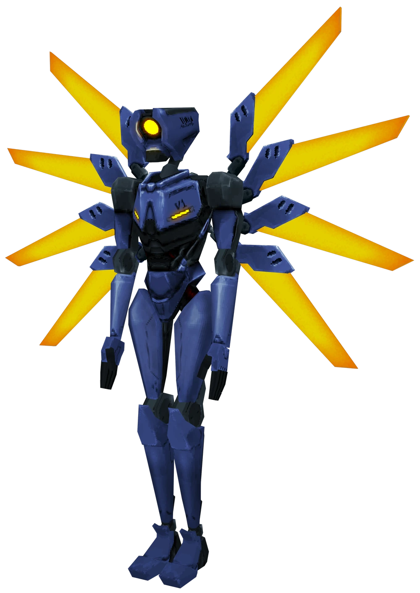
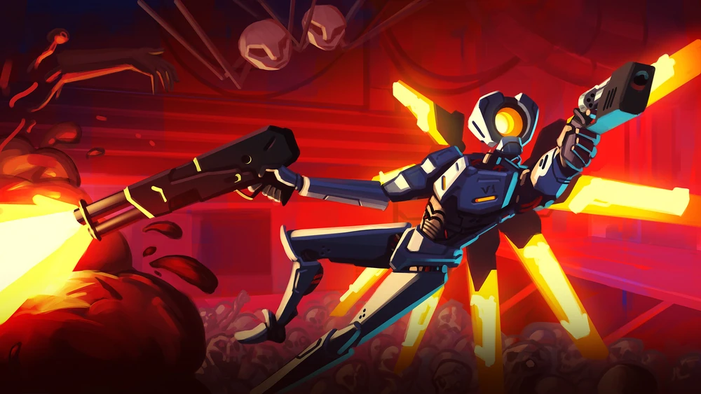
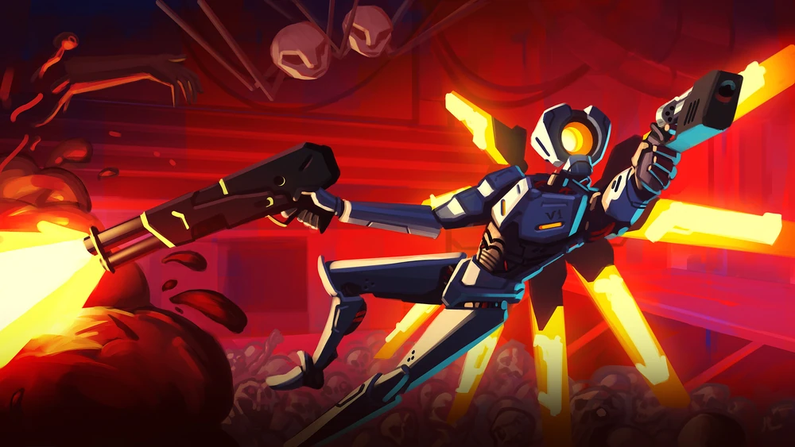

Úvod
Ultrakill je videohra spadající pod žánr "first-person shooter". Tuto hru vytvořil Arsi "Hakita" Patala a vydalo jí studio New Blood Interactive. Ultrakill se zaměřuje na rychlý pohyb kombinovaný s vysokou přesností míření a nízkou reakční dobou
Hráč ovládá robota V1, který je poháněň krví a po vymření lidské rasy se spouští hluboko do pekla, aby mohl přežít. Peklo se inspiruje depikcí pekla v Dantově Božské komedii.
Mechaniky
I přes to, že Ultrakill obsahuje pouze pár zbraní, tak kombinace mezi nimi vedou k obrovskému počtu možností, jak se vypořádat s jakýmkoliv problémem. To však není tak lehké, protože často vyžadují přesné pohyby, či střely. Za každé zabití obdržíte stylové body, které pomalu vyprchávají, či pokud nejste opatrní a ztratíte hodně životů, tak rovnou zmizí. Tyto stylové body slouží jako postčení k zlepšení schopností a hraní ne jen pro výhru, ale i styl.
Samotný pohyb je také celkem komplexní. Můžete uskočit, klouzat, nebo sebou hodit o zem a ublížit nepřátelům poblíž dopadu. To lze kombinovat například s explozemi a povrchem a brzy budete proklouzávat mezi střelami s rychlostí.
 

Osobní poznámka
Na jednotlivé stránky budu doplňovat svůj názor na mechaniky a je důležité podotknou, že budu zmiňovat mechaniky se kterými jsem alespoň trochu obeznámen a že hra obsahuje o mnoho více mechanik než zde budou napsané. Pro šiřší seznam mechanik doporučuji navštívit tuto stránku (Varuji, že fandom.com není příjemná stránka na používání)